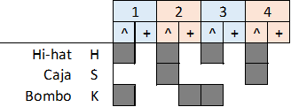
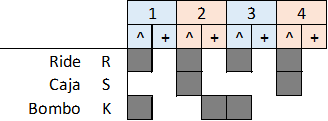

Intro: (: )
Estrofa: (R1: 16) (x2)
Estribillo: (R1-r: 15)(T(1): 1)
Solo: (: )
Estrofa: (R1: 16)
Estribillo: (R1-r: 16)


Intro: (Mim -> Fa#m) x2 (Mim-Lam) x2 Mim Lam Oigo muerte por el tragaluz, ves el féretro de cristal, el resto de mi muerte aquí, no fue una guerra nuclear, ¿verdad? Re Sol tu indiferencia exterminó la humanidad Mim Lam tu equidistancia la igualdad Re Sol no es un oasis tal vez sea una ilusión Mim Re de aquella estéril ambición. (Mim-Lam) x2 Mim Lam Seis pronombres sin hogar Provocan siempre mi ansiedad Verdad o demencia social Por favor no enreden más (sin más) Re Sol Aquel diablo sabe bien cómo triunfar Mim Lam líbranos de nuestro mal Re Sol Esas carencias siempre sirven al poder Mim Re Se fue la orilla del edén (¡¡¡Rompe el cristal¡¡¡) Solos y Modulaciones Sim->Sol->La->Re-Re5/E Sim->Sol->La->-> Rem -> La#->Do->Rem Rem->La#->Do->-> La#->Rem->Solm->Lam La#->Rem->Sol->Fa->Mim (dulzainas mi,mib,mi)(si,la#,si) Mim Lam De quien prescinde tu ambición, No hay amor en la exclusión Donde hay pecado hay pecador Oigo muerte por el tragaluz ¿y tú? Re Sol Si vendo el alma no me dejarán gritar Mim Lam En esta yerma infiel crueldad Re Sol Destino de trileros, triste y negra luz Mim Re Líbranos de Gadú